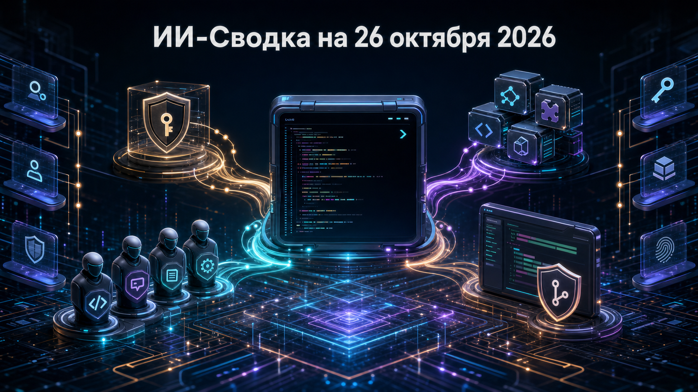

Новостей сегодня меньше, чем обычно
Сегодня в фокусе — обновление Qwen Code, инструмента для агентной разработки от Alibaba Qwen. Релиз показывает, что конкуренция CLI-агентов всё больше смещается от одиночного диалога с моделью к управляемым долговременным сессиям, делегированию задач и контролируемой автоматизации изменений в коде.
Практический вопрос для команд остаётся прежним: чем больше агент получает доступа к MCP-инструментам, репозиториям и процессам review, тем важнее прозрачные настройки авторизации, аудит действий и границы автоматического выполнения.
Alibaba Qwen выпустила Qwen Code v0.26.1. Согласно официальному описанию релиза, инструмент получил opt-in сохранение bearer token для daemon в файле с доступом только владельцу, ручное сжатие контекста для Managed Sessions с сохранением истории аудита и возможность менять MCP-серверы без пересоздания сессии.
Также в Managed Agent по умолчанию стала доступна публичная делегация субагентам, а в релиз вошли сценарии PR-review, guarded autofix и повторного запуска проверок. Это расширяет возможности для длительных workflow вокруг pull request, но не является независимым подтверждением качества или безопасности таких автоматизаций: командам по-прежнему нужны проверки прав доступа, review изменений и контроль того, какие инструменты агент может вызывать.